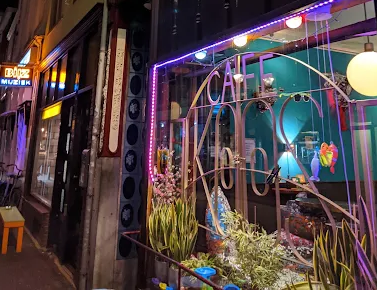

Gezellige kroeg · Boekhorststraat, Den HaagGewoon gezellig,
Gewoon gezellig,
voor iedereen.
Vrouwvriendelijk, met alternatieve muziek, livemuziek en exposities aan de muur. Ouderwetse prijzen, speciaalbier, darten en dj's. In de zomer een heerlijk terras.
Vandaag geopend: 15:00 – 22:00
Welkom bij
Café Koos
Café Koos is een kroeg voor iedereen. Of je nu stamgast bent of voor het eerst binnenloopt, je hoort erbij. We houden van alternatieve muziek, eerlijke prijzen en goed bier. Er hangt altijd kunst aan de muur, het dartbord staat klaar en in de zomer schuift iedereen naar het terras.
Kortom: gewoon gezellig. Kom langs, pak een biertje en voel je thuis.

Wat zeggen onze gasten
Reviews
Gemiddeld 4,6 / 5 sterren, gebaseerd op tientallen Google reviews
Kom langs
Wat kun je bij ons doen?
Bekijk de agenda
Live muziek, dj's en exposities. Bekijk wat er speelt.
Lees meerBoek je feestje
Verjaardag, borrel of teamuitje? Vraag het aan.
Lees meerWil je exposeren?
Kunstenaars kunnen hun werk aan de muur hangen.
Lees meerVandaag geopend: 15:00 – 22:00·Boekhorststraat 58, 2512 CS Den Haag